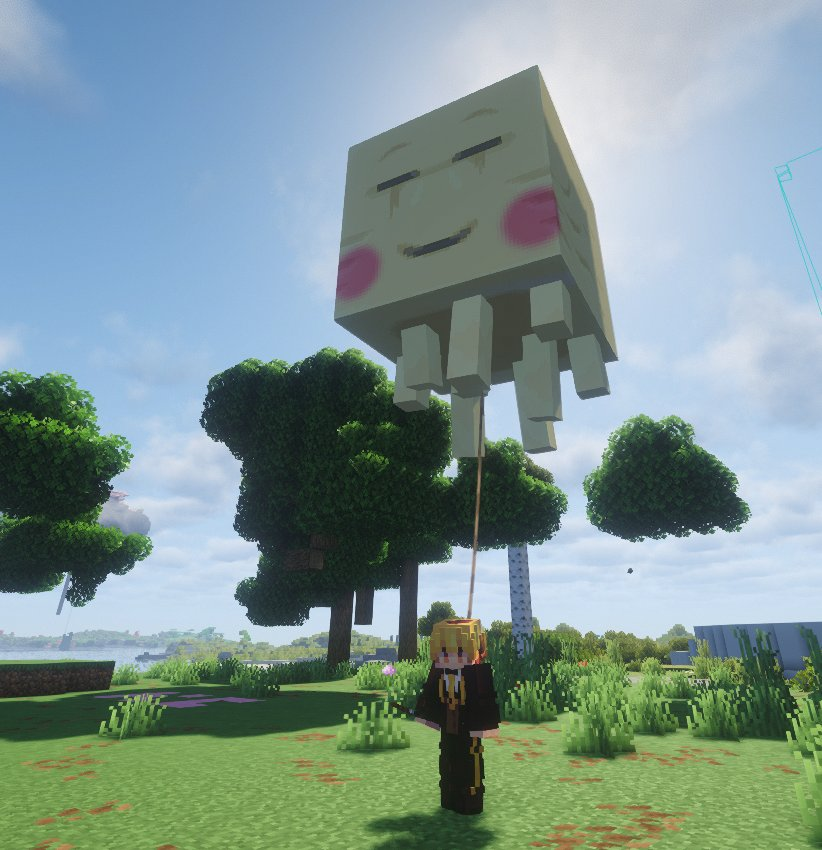

L'affaire Boo : la vérité sur le kidnapping et l'assassinat du Happy Ghast des Belazur
Après une interview exclusive accordée par la famille, le Karmine Déchaîné révèle la chronologie complète des événements — du kidnapping jusqu'au coup fatal.

Le Karmine Déchaîné vous avait déjà rapporté la mort tragique de Boo, le Happy Ghast bien-aimé de la famille Belazur. Aujourd'hui, après une interview exclusive accordée par la famille, nous sommes en mesure de vous révéler la chronologie complète des événements — du kidnapping jusqu'au coup fatal. Une histoire de courage, de principes et de trahison.
Boo, une créature aimée
Boo était arrivé dès le début auprès des Belazur, traité avec soin et affection. Ce Happy Ghast avait ses habitudes, ses petites manies — dont celle de voler de temps à autre, une curiosité qui lui a peut-être coûté la vie. Un jour, profitant du sommeil de ses propriétaires, Boo parvient à couper sa laisse et disparaît. Un avis de recherche est immédiatement lancé. Mais en réponse, ce sont des menaces anonymes que reçoit la famille — le début d'un cauchemar.
Le piège des ravisseurs
Un homme se présente d'abord, puis c'est George Frog — lui-même sous la menace — qui vient transmettre un message aux Belazur : se rendre seule sur une île non loin, sans escorte. Les ravisseurs détiennent Boo et réclament une rançon de 1 000 KCoins pour le libérer.
La famille Belazur a une position claire, ferme et sans équivoque : on ne négocie pas avec des terroristes. Une décision difficile, mais assumée jusqu'au bout.
L'embuscade — quand la justice tente de frapper
Plutôt que de céder au chantage, les Belazur choisissent l'action. En coordination avec les autorités compétentes, un stratagème est mis en place. Elle se rend sur l'île volante avec son chien, accompagnée en secret d'un policier, d'Aynasha sa fidèle maid, de Zack employé de banque, et de trois agents en invisibilité. Une embuscade soigneusement préparée pour coincer les malfrats et libérer Boo.
Le coup fatal — Alan Leonhart identifié
Mais les ravisseurs ont eu le dernier mot ce soir-là. Lorsque les renforts sont apparus, l'un d'eux a réagi avec une violence froide et calculée : Boo a été tué d'une flèche en plein crâne. Le tireur est formellement identifié — il s'agit d'Alan Leonhart.
Un meurtre délibéré, commis pour punir la famille Belazur d'avoir osé résister. Un acte d'une cruauté sans nom, qui ne restera pas impuni.
La position des Belazur
La famille Belazur, meurtrie mais debout, maintient sa position. Ils n'ont aucun regret d'avoir refusé de négocier — leur dignité et leurs principes ne sont pas à vendre. La tête d'Alan Leonhart est mise à prix à 35 005 KCoins. La justice passera.
"Ils ont tué Boo pour nous punir d'avoir résisté. Nous résisterons encore. Toujours."
— La Famille Belazur
Alan Leonhart est activement recherché. Toute information menant à son arrestation doit être transmise aux Belazur ou aux autorités. La récompense est de 35 005 KCoins.